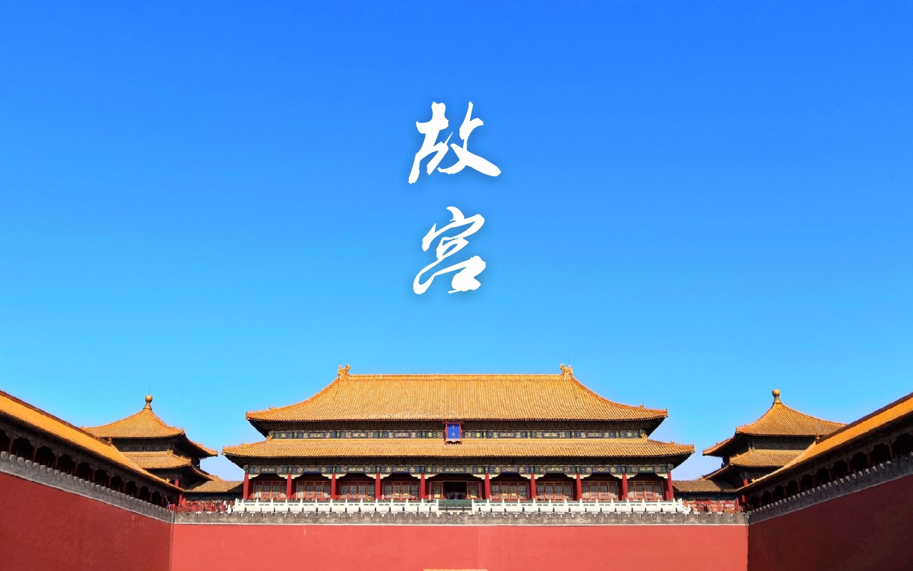

发布者：故宫博物院发布日期：20##-##-##阅读数：234
故宫是中国现存最大、保存最完整的木结构宫殿建筑群，是中国古代宫城发展史上现存的唯一实例和最高典范，其宏大建筑和珍贵的宫廷典藏真实见证了古代劳动人民的智慧创造，展示了古人追求人合一、万邦协和、正谊明道的价值理念，贯通了古代中国源远流长的文明记亿，彰显了中华民族博采众长的气度。
故宫雄宏厚重的文化积淀，使其成为当之无愧的中华文明承载者。敦煌莫高窟是世界上现存规模最大、延续时间最长、内容最丰富、保存最完整的佛教石窟群，古代丝绸之路上的璀璨明珠，从公元4至14世纪，莫高定历经千年营建，荟萃了古代中西方文明交融之精华，凝结成集建筑、壁画、彩塑为一体的文化艺术宝库，蕴含着海纳百川、开放包容、和谐共生、美美与共的人文精神，见证着华夏文明绵延不绝的多元共存，书写出大美不言的精神诗篇。
故宫与敦煌这两座文化丰碑，以其超越时空，融汇古今的独特魅力，让我们深刻感悟到中华民族伟大的融合力、创造力和生命力。故宫博物院与敦煌研究院是并蒂相契的文化守望者，见证着中国文物事业的不凡发展历程1951年，敦煌艺术展览首登故宫午门城楼。70年后，我们再襄盛举，展示故官与敦皇文物保护、研究、弘扬事业从艰难起步到蓬勃发展，从肇路蓝续至行稳致远的光辉历程。这背后既有党和国家的高度重切和支持，亦有代代文物工作者的不懈努力和奉献，更是民族自信心、自尊心的空前提高和国家综合里力的不断跃升的结果站在历史的新起点，我们要更好地肩负起时代使命，保护好、传承好故官与敦皇文化遗产，推陈出新，使其焕发出勃勃生机与活力，创造出新的时代辉